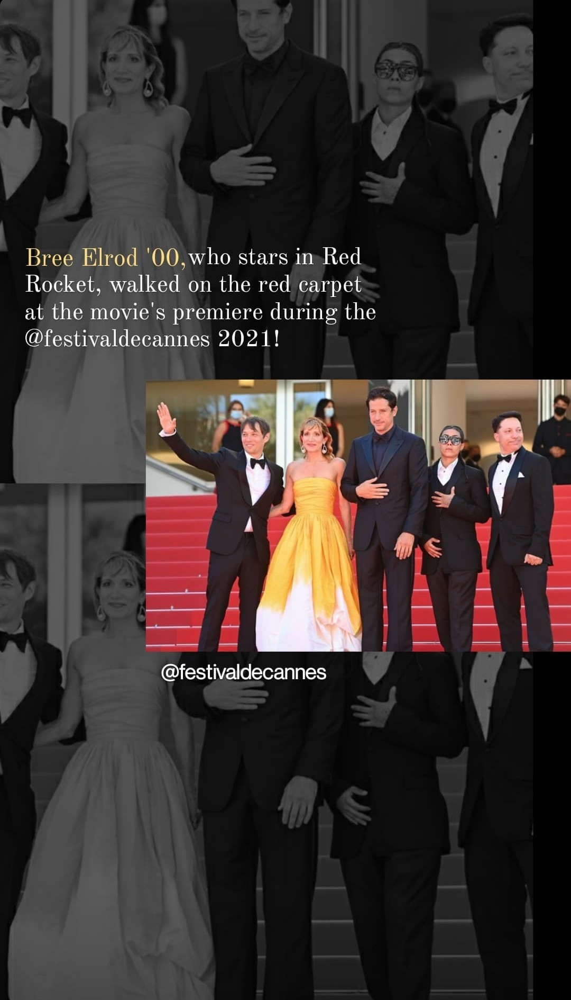
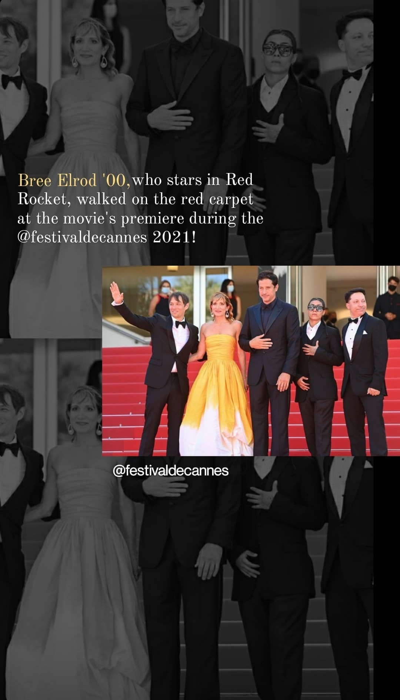
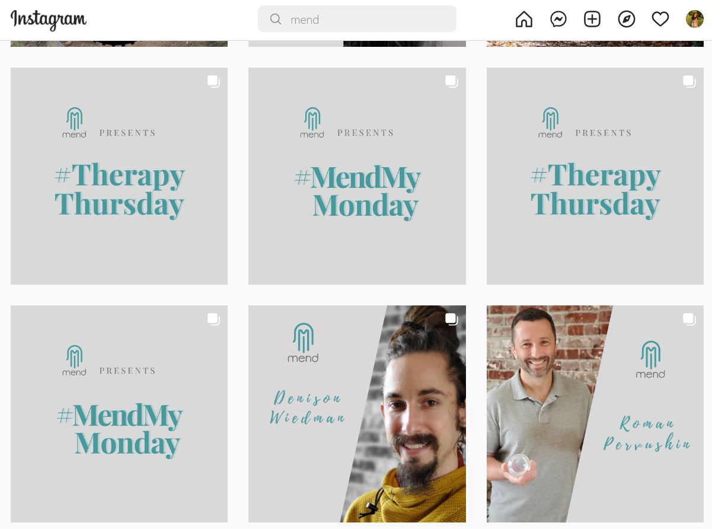
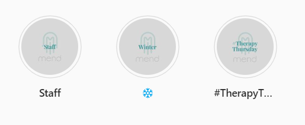
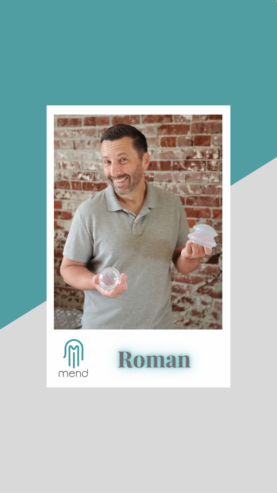
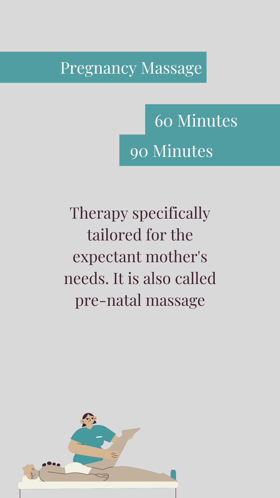
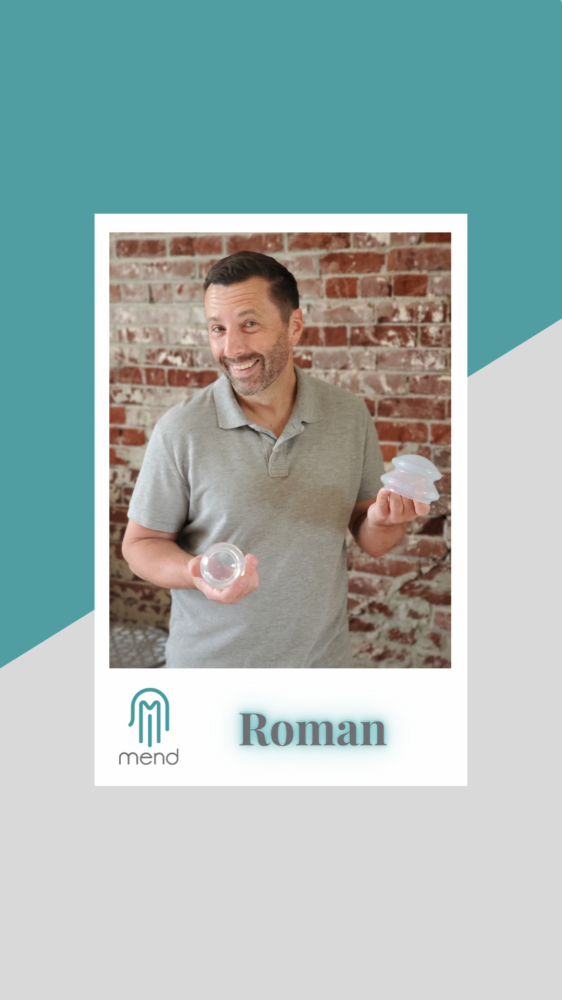
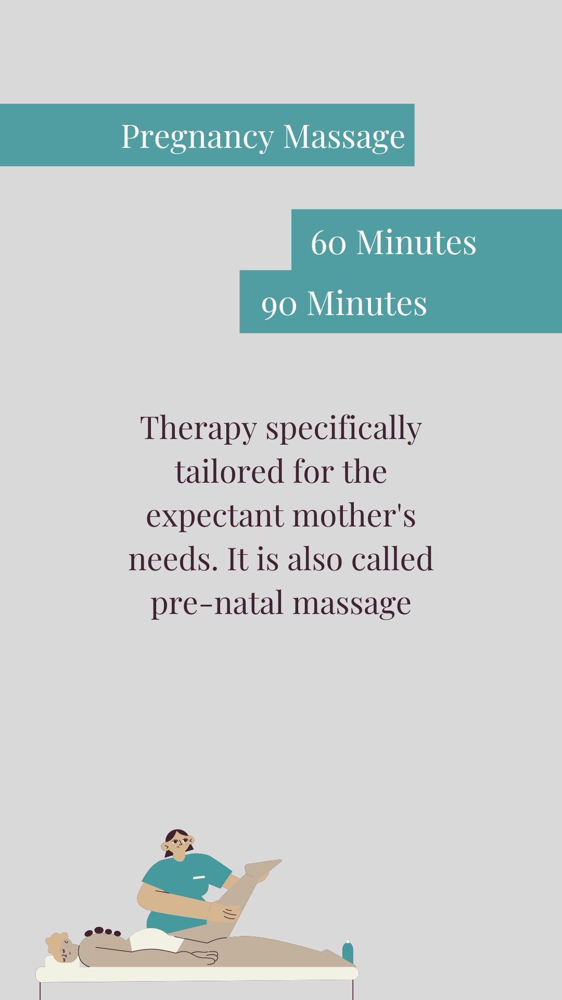

Knox College
-Optimized content across Facebook, Instagram + Stories, and Twitter
-Regularly designed Instagram stories using Adobe Photoshop and Bridge
-Used CRM tools and organically increased page reach through stories by 3.42% and content by 37.2%
-Tracked, analyzed, and reported weekly analytics and KPIs using Facebook Insights
-Pitched ideas to the communications team, developed and produced content for the website and YouTube
-Ideated and executed a week-long series of posts researching college history; organized a consecutive 10-day Snapchat takeover;
directed Instagram reels and TikTok videos to align with branding based on industry trends
Content created for Instagram performed upto 5.37% better than others.
-Assist with ‘Talk to a Current Student’ campaigns
-Convey stories of the campus experience on tour with visitors, alumni, and campus job candidates
-Send personalized follow-up communication to visitors
-Support admission staff with clerical work and daily general office tasks
flydubai
-Edited Inflight Services Crew Newsletter, December 2021 Issue
-Verified links and landing pages on marketing emails
-Learned the basic functioning of Emarsys for email marketing
-Studied the brand and POS guidebooks
-Shadowed marketing professionals with the in-house CGU on responses to creative briefs, from campaigns to marketing materials
-Attended 4 sessions on Stakeholder Management in Management Graphic Unit
Galesburg Tourism & Visitor's Bureau
-Interviewed the current owners of Innkeeper's, Galesburg to write a feature article for the magazine
-Photographed and edited multiple pictures using Adobe Photoshop and Adobe Bridge of the locations
Mend Body Professionals
-Scheduled posts strategically on Facebook and Instagram using Creator Studio
-Researched the various areas of the business interest to develop a social media presence
-Communicated and collaborated regularly with the founders to navigate the process smoothly
-Curated sample graphics for Instagram and Facebook
-Worked with a specific color palette to promote the brand colors
-Researched the brand audience to create audience attracting posts
-Developed a master document of different types of ideas to pursue
The Writer's Workout
Social Media, Content and Community Specialist
-Scheduled and created daily posts across four+ social accounts using Creator Studio, Hootsuite, and Meltwater-Optimized content across Facebook, Instagram + Stories, and Twitter
-Regularly designed Instagram stories using Adobe Photoshop and Bridge
-Used CRM tools and organically increased page reach through stories by 3.42% and content by 37.2%
-Tracked, analyzed, and reported weekly analytics and KPIs using Facebook Insights
-Pitched ideas to the communications team, developed and produced content for the website and YouTube
-Ideated and executed a week-long series of posts researching college history; organized a consecutive 10-day Snapchat takeover;
directed Instagram reels and TikTok videos to align with branding based on industry trends
Work Examples:
Instagram Posts + StoriesContent created for Instagram performed upto 5.37% better than others.
 

Admissions Ambassador and Tour Guide
-Engage prospective students and families on a personal level on campus tours and on the phone, via email, or chat.-Assist with ‘Talk to a Current Student’ campaigns
-Convey stories of the campus experience on tour with visitors, alumni, and campus job candidates
-Send personalized follow-up communication to visitors
-Support admission staff with clerical work and daily general office tasks
Brand and Communications Intern
-Proofread and provided feedback on the entire Crew Resource Management Manual and the Fatigue Risk Management document-Edited Inflight Services Crew Newsletter, December 2021 Issue
-Verified links and landing pages on marketing emails
-Learned the basic functioning of Emarsys for email marketing
-Studied the brand and POS guidebooks
-Shadowed marketing professionals with the in-house CGU on responses to creative briefs, from campaigns to marketing materials
-Attended 4 sessions on Stakeholder Management in Management Graphic Unit
Writer
-Researched, visited, and wrote about the multiple coffee and sweet businesses in Galesburg-Interviewed the current owners of Innkeeper's, Galesburg to write a feature article for the magazine
-Photographed and edited multiple pictures using Adobe Photoshop and Adobe Bridge of the locations
Read Here:
Digital Marketing Strategist
-Implemented the one-year social media calendar curating graphics via Canva-Scheduled posts strategically on Facebook and Instagram using Creator Studio
-Researched the various areas of the business interest to develop a social media presence
-Communicated and collaborated regularly with the founders to navigate the process smoothly
Digital Marketing Consultant
-Strategized and organized a one-year social media calendar-Curated sample graphics for Instagram and Facebook
-Worked with a specific color palette to promote the brand colors
-Researched the brand audience to create audience attracting posts
-Developed a master document of different types of ideas to pursue
Work Examples:
Total page views increased by 11% after creating and posting through campaigns like #TherpayThursday and #MendMyMonday.


 
 
The Writer's Workout
-Evaluated & critiqued 15-20 short stories within 3 days
based on
weekly
prompts
-Led a group of 5 to generate prompt details
-Worked on a social media project, creating graphics & promotional campaigns for their new anthology
-Led a group of 5 to generate prompt details
-Worked on a social media project, creating graphics & promotional campaigns for their new anthology